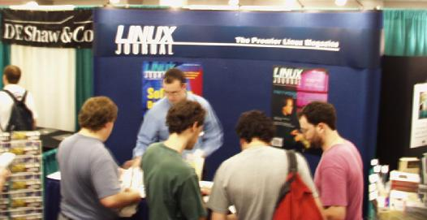
Linux Journal Booth -- Donald Wink
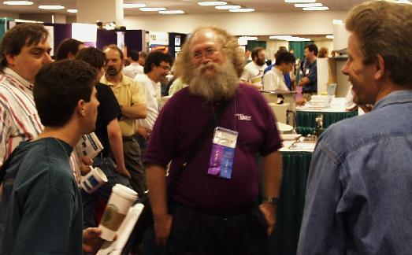
Jon "maddog" Hall and fans
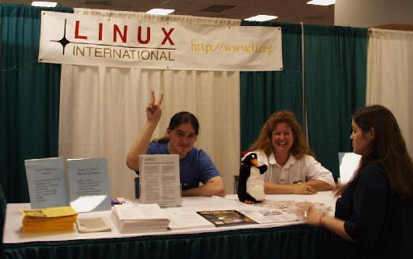
Linux International
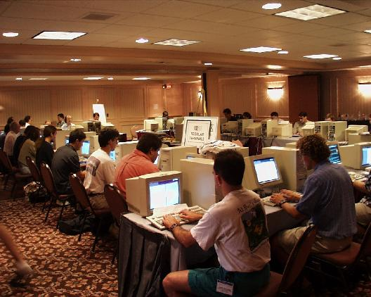
Terminal Room
FBI
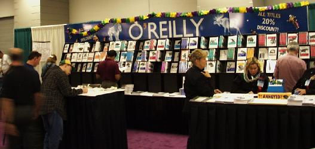
O'Reilly & Associates
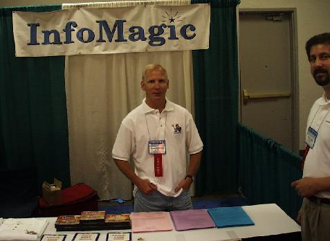
InfoMagic
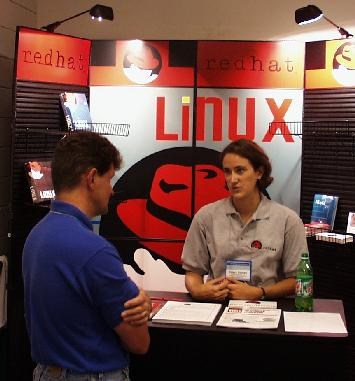
Red Hat Software
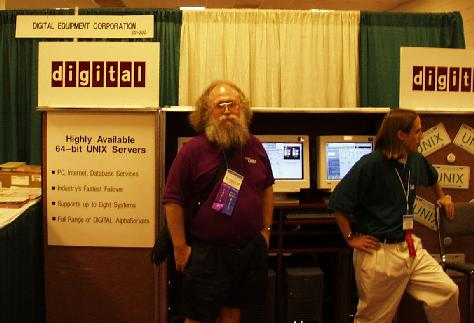
Digital Equipment Corp. -- Jon "maddog" Hall
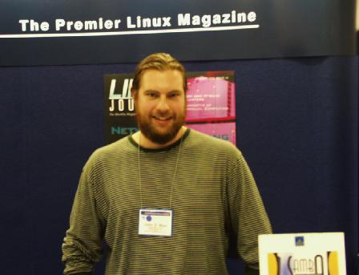
John Blair, Author Samba: Integrating UNIX and Windows
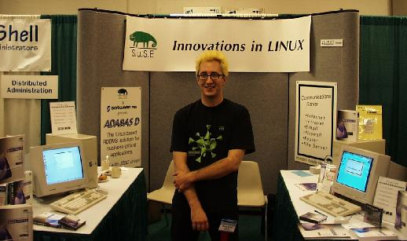
S.u.S.E. -- Bodo
Perforce
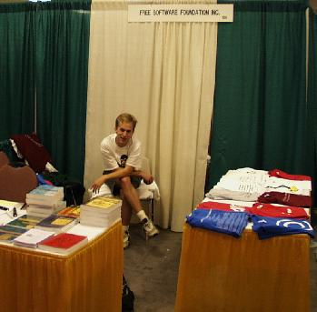
Free Software Foundation
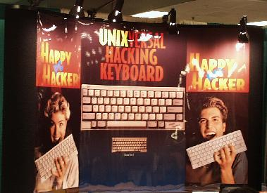
UNIXversal Hacking Keyboard